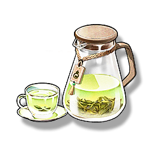

Refreshment Tea
Supplies

Increases the maximum health of all Resonators in the team by 12% for 15 minutes, only effective for the player's Character in multiplayer games.
A free herbal tea distributed by the Jinzhou government, it is known for its heat-clearing and detoxifying effects and is popular among physical laborers. "Thank you to everyone who works hard for Jinzhou."